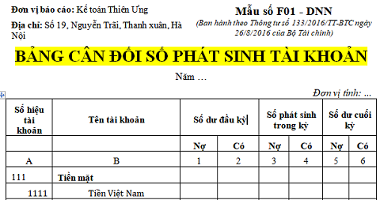

Mẫu bảng cân đối tài khoản kế toán theo Thông tư 133, đây là mẫu bảng cân đối số phát sinh tài khoản kế toán Excel mới nhất hiện nay. Hướng dẫn cách lập Bảng cân đối tài khoản kế toán theo Thông tư 133.
1. Mẫu bảng cân đối tài khoản file Word
|
Đơn vị báo cáo: Công ty TNHH Tư vấn & Đào tạo Diệu Tâm
BẢNG CÂN ĐỐI TÀI KHOẢN (Mẫu số F01 - DNN) Đơn vị tính: ...
Lập, ngày ... tháng ... năm ...
|
|||||||||||||||||||||||||||||||||||||||||||||||||||||||||||||||||||||||||||
Ghi chú: Đối với trường hợp thuê dịch vụ làm kế toán, làm kế toán trưởng thì phải ghi rõ số Giấy chứng nhận đăng ký hành nghề dịch vụ kế toán, tên đơn vị cung cấp dịch vụ kế toán.
Tải Mẫu bảng cân đối tài khoản kế toán về tại đây:
- Bản word: TẢI VỀ
- Bản Excel: Mẫu sổ sách kế toán trên Excel
2. Mẫu bảng cân đối tài khoản trên Excel
3. Cách lập bảng cân đối tài khoản theo TT 133
a. Mục đích: Phản ánh tổng quát tình hình tăng giảm và hiện có về tài sản và nguồn vốn của đơn vị trong kỳ báo cáo và từ đầu năm đến cuối kỳ báo cáo. Số liệu trên Bảng cân đối tài khoản là căn cứ để kiểm tra việc ghi chép trên sổ kế toán tổng hợp, đồng thời đối chiếu và kiểm soát số liệu ghi trên Báo cáo tài chính
b. Căn cứ và phương pháp ghi sổ:
Bảng cân đối tài khoản được lập dựa trên Sổ Cái và Bảng cân đối tài khoản kỳ trước.
Trước khi lập Bảng cân đối tài khoản phải hoàn thành việc ghi sổ kế toán chi tiết và sổ kế toán tổng hợp; kiểm tra, đối chiếu số liệu giữa các sổ có liên quan.
Số liệu ghi vào Bảng cân đối tài khoản chia làm 2 loại:
- Loại số liệu phản ánh số dư các tài khoản tại thời điểm đầu kỳ (Cột 1,2- Số dư đầu năm), tại thời điểm cuối kỳ (cột 5, 6 Số dư cuối năm), trong đó các tài khoản có số dư Nợ được phản ánh vào cột “Nợ”, các tài khoản có số dư Có được phản ánh vào cột “Có”.
- Loại số liệu phản ánh số phát sinh của các tài khoản từ đầu kỳ đến ngày cuối kỳ báo cáo (cột 3, 4 Số phát sinh trong tháng) trong đó tổng số phát sinh “Nợ” của các tài khoản được phản ánh vào cột “Nợ”, tổng số phát sinh “Có” được phản ánh vào cột “Có”của từng tài khoản.
- Cột A, B: Số hiệu tài khoản, tên tài khoản của tất cả các Tài khoản cấp 1 mà đơn vị đang sử dụng và một số Tài khoản cấp 2 cần phân tích.
- Cột 1, 2- Số dư đầu năm: Phản ánh số dư ngày đầu tháng của tháng đầu năm (Số dư đầu năm báo cáo). Số liệu để ghi vào các cột này được căn cứ vào dòng Số dư đầu tháng của tháng đầu năm trên Sổ Cái hoặc căn cứ vào phần “Số dư cuối năm” của Bảng cân đối tài khoản năm trước.
- Cột 3, 4: Phản ánh tổng số phát sinh Nợ và tổng số phát sinh Có của các tài khoản trong năm báo cáo. Số liệu ghi vào phần này được căn cứ vào dòng “Cộng phát sinh lũy kế từ đầu năm” của từng tài khoản tương ứng trên Sổ Cái.
- Cột 5, 6 “Số dư cuối năm”: Phản ánh số dư ngày cuối cùng của năm báo cáo. Số liệu để ghi vào phần này được căn cứ vào số dư cuối tháng của tháng cuối năm báo cáo trên Sổ Cái hoặc được tính căn cứ vào các cột số dư đầu năm (cột 1, 2), số phát sinh trong năm (cột 3, 4) trên Bảng cân đối tài khoản năm này. Số liệu ở cột 5, 6 được dùng để lập Bảng cân đối tài khoản năm sau.
Sau khi ghi đủ các số liệu có liên quan đến các tài khoản, phải thực hiện tổng cộng Bảng cân đối tài khoản. Số liệu trong Bảng cân đối tài khoản phải đảm bảo tính cân đối bắt buộc sau đây:
Tổng số dư Nợ (cột 1), Tổng số dư Có (cột 2), Tổng số phát sinh Nợ (cột 3), Tổng số phát sinh Có (cột 4), Tổng số dư Nợ (cột 5), Tổng số dư Có (cột 6).
----------------------------------------------------------------------------------------
CÔNG TY TNHH TƯ VẤN & ĐÀO TẠO DIỆU TÂM Chuyên Tư Vấn Quản Trị Doanh Nghiệp & Đào Tạo Kế Toán Thực Chiến
Website: ketoandieutam.vn
